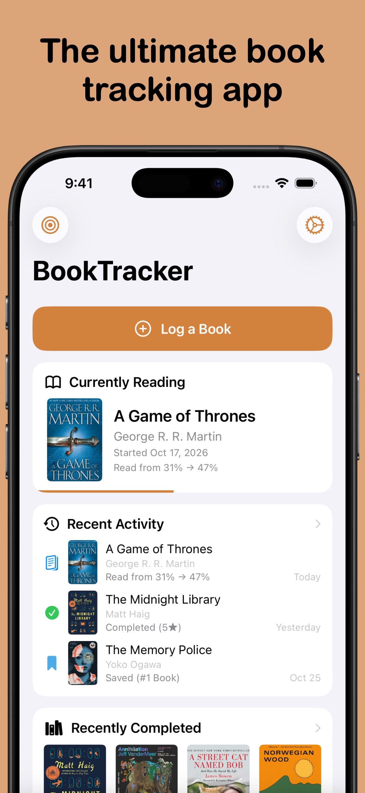
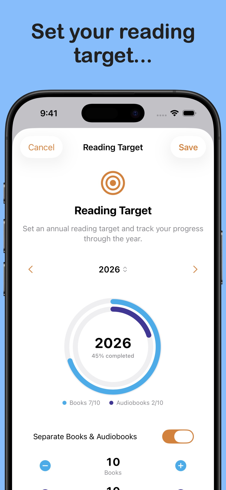
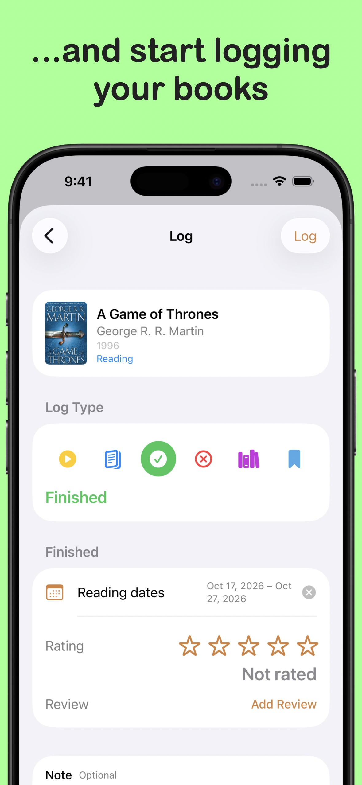
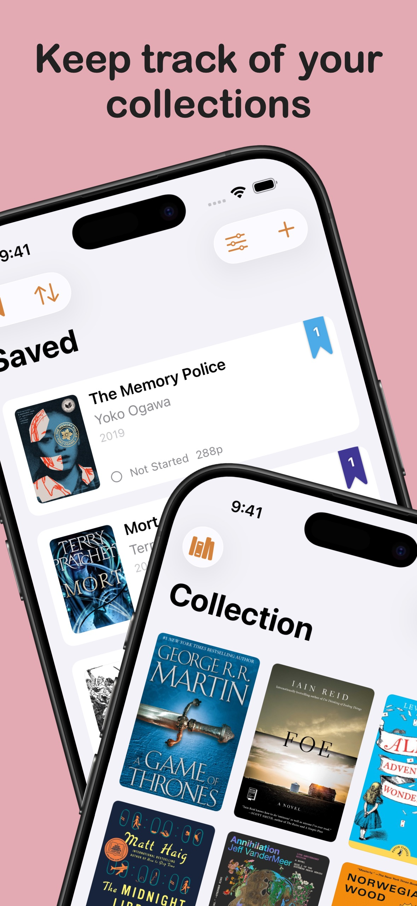
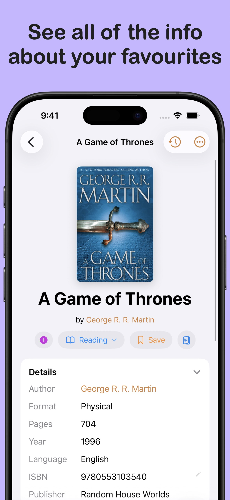
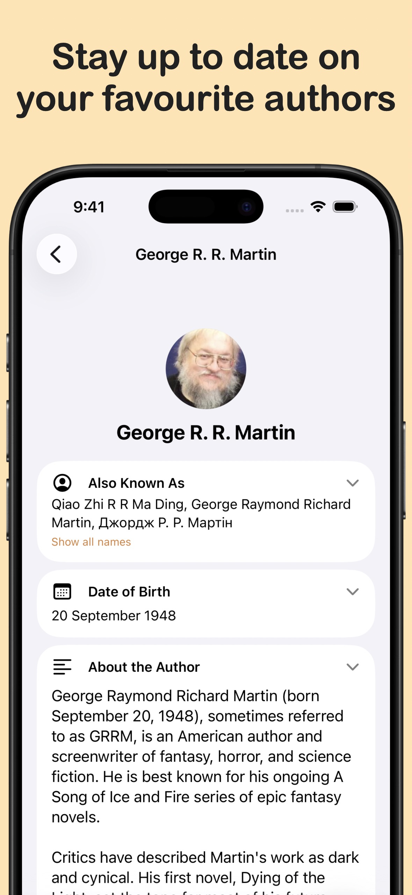
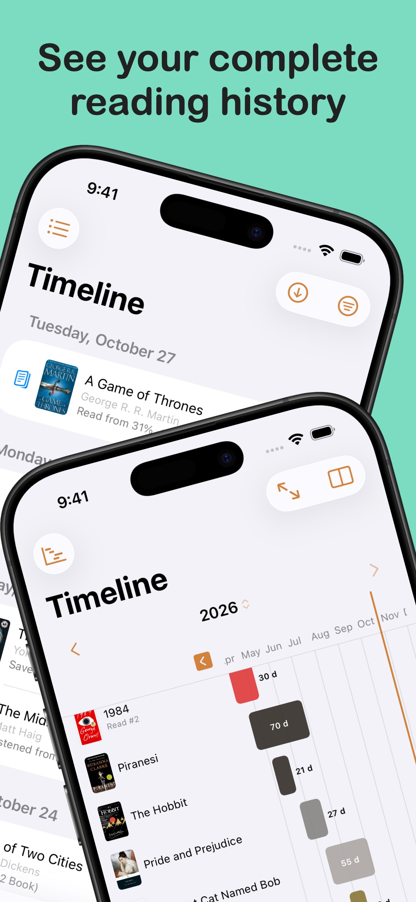
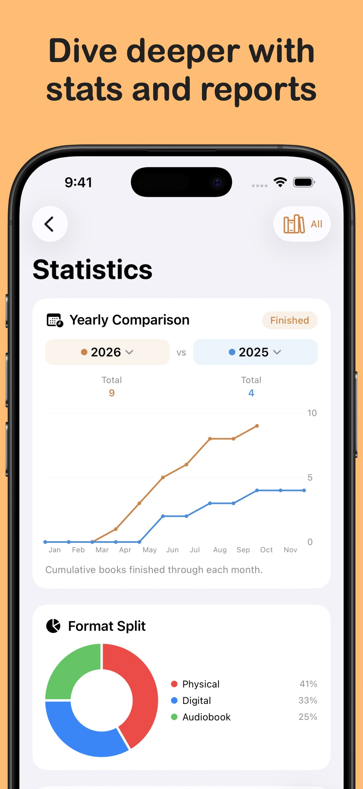
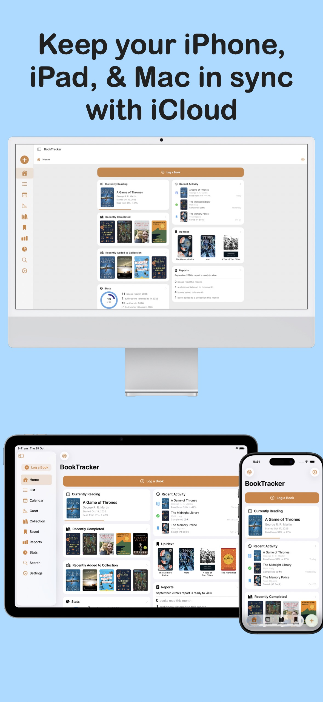
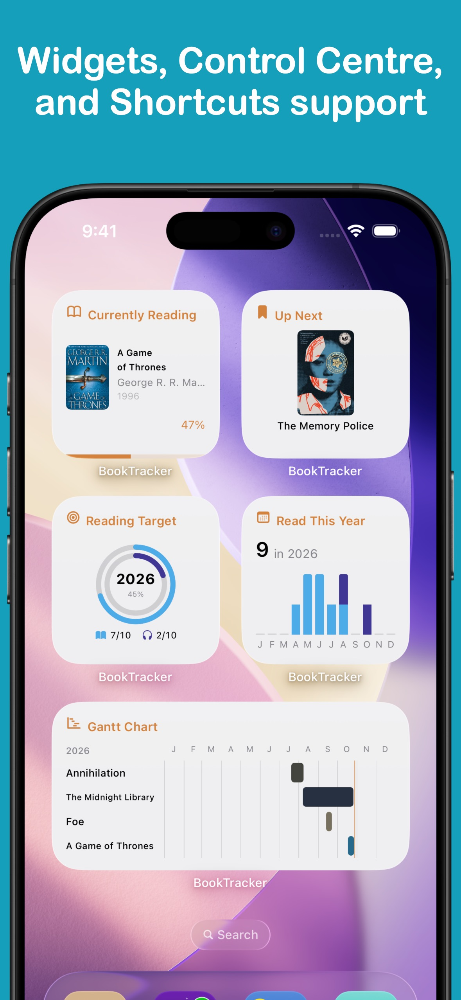

BookTracker
Your library. Your goals. Your next read.
Organise your library, log your progress, and save your next reads, all in one place.
Download from the App Store today
Available on:
iOS
iPad
Mac










Features
- Find and add books quickly Search Open Library, add a book by ISBN, or scan its barcode to bring it into your library.
- A home for your whole library Keep your Collection and Saved books organised with custom collections, tags, filters, and flexible views.
- Log reading your way Record starts, progress, finishes, and books you set aside. Track pages, chapters, percentages, word counts, or audiobook listening time.
- Keep your next reads in order Build an Up Next queue from your Saved shelf and see what you want to read after your current book.
- A timeline of your reading Look back through your activity in a list, calendar, or Gantt-style reading timeline, including re-reads.
- Set a reading target Choose a yearly goal for books and audiobooks, then follow your progress from the app or a Home Screen widget.
- Reports and your reading history Review your reading over time, export your history as CSV or PDF, and import books from CSV.
- Keep your devices in sync iCloud sync keeps books, activity, tags, and reading targets up to date across your devices.
- Home Screen widgets See the book you’re reading or track your yearly target at a glance with Home Screen and Lock Screen widgets.
- Apple Shortcuts Add a book, log your reading, or open a section using Apple Shortcuts or Siri.
BookTracker Pro
- Advanced reading statistics Unlock the full stats suite, with deeper breakdowns, reading patterns, trends, and insights beyond the free books-read chart.
- Custom book covers Use your own image or cover URL to personalise a book. Standard edition cover art remains available in the free app.
- Activity and book symbol colours Choose custom colours for reading activity and book symbols throughout the app.
- Tab bar customisation Choose which screens appear in your tab bar and in what order, so your most-used screens are always one tap away.
- Custom app icons Choose from a range of alternative app icons to personalise BookTracker on your Home Screen.
- More review fonts Choose additional fonts to give your book reviews a more personal feel.
Available Languages
English
Chinese (Simplified)
Chinese (Traditional)
Chinese (Hong Kong)
French
German
Italian
Japanese
Korean
Portuguese (Portugal)
Portuguese (Brazil)
Spanish (Spain)
Spanish (Latin America)
Spanish (United States)
Thai
More from LifeTracker Studio
VitaminTracker
Stay on top of your vitamins and nutrients.
View app →WaterTracker
Track your daily water intake and stay hydrated.
View app →HabitTracker
Build lasting habits and track your daily routines.
View app →WeightTracker
Set goals and achieve your target weight.
View app →FitnessTracker
Schedule and record your workouts with ease.
View app →ProteinTracker
Make hitting your protein targets a breeze.
View app →DreamTracker
Remember and organise your dreams.
View app →